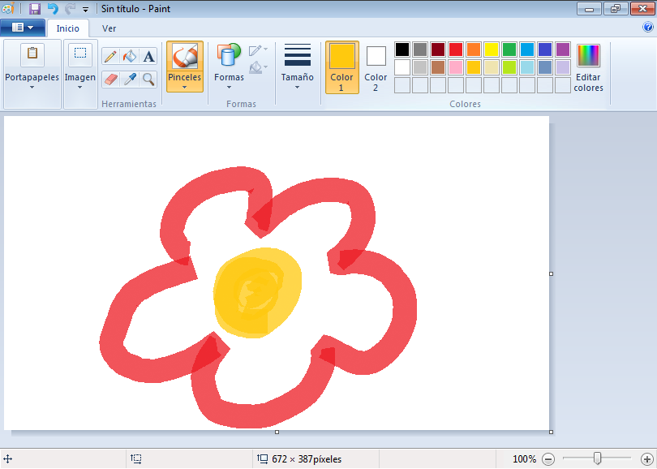
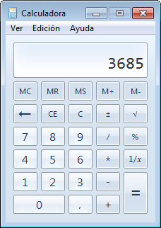
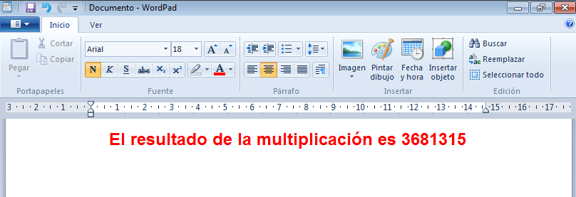
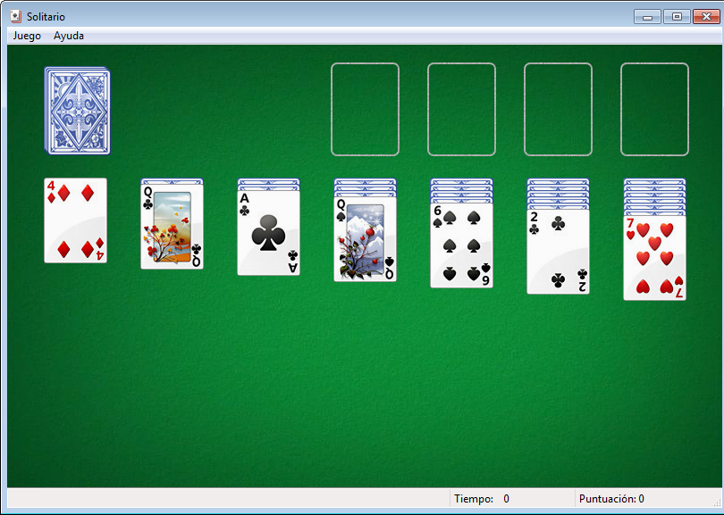

1. Introducción
La práctica de hoy será un repaso de todo lo que hemos visto estas 10 sesiones, donde practicaremos la apertura/cierre de aplicaciones, trabajar con varias aplicaciones al mismo tiempo, etc.
2. Abrir aplicaciones
Empecemos a trabajar abriendo 4 aplicaciones. Quiero que abráis:
- Solitario
- Internet explorer
- Calculadora
- WordPad
- Paint
3. Trabajar con las aplicaciones: Paint
Ahora quiero que trabajes un rato con cada aplicación, para que nos demos cuenta de lo siguiente:
- ¿Cómo podemos cambiar y dejar de trabajar con una aplicación y empezar a trabajar con otra?
- Haz un dibujo en Paint como el de la imagen. Si intentas cerrar la aplicación, ¿qué pregunta te hace?
- Si minimizamos la aplicación, ¿nos hará esa misma pregunta? ¿Por qué?
4. Trabajar con la calculadora
Ves a la calculadora y haz el siguiente cálculo: 3685 multiplicado (*) 999 = ¿¿¿????
5. Trabajar con el Wordpad
Ahora en el WordPad, introduce un texto como el siguiente, con las siguientes características: Tipo de fuente Arial, tamaño de fuente: 18px, párrafo centrado, color: rojo. 
6. Solitario
Como habéis trabado muy bien, ahora podéis jugar un poco al juego del solitario. :)
